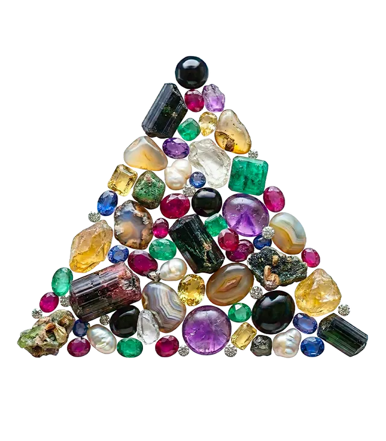

Lithothérapie
Insomnie et Stress : Le pouvoir de l'Améthyste
Par MadeleineMis à jour le 30 octobre 20264 min de lecture

En bref
L'améthyste favorise un sommeil réparateur et dissipe le stress en apaisant le bavardage mental. Placée sous l'oreiller ou sur la table de nuit, cette pierre aux vibrations douces aide à relâcher les tensions accumulées dans la journée, éloigne les cauchemars et instaure une atmosphère propice à la détente nocturne.
Lorsque le rythme effréné des journées surcharge l'esprit, la nuit cesse parfois d'être un refuge pour devenir le théâtre d'un tourbillon de pensées. L'améthyste s'impose alors comme l'une des alliées les plus précieuses du règne minéral. Reconnue en lithothérapie pour ses vertus profondément relaxantes, elle aide à dénouer les tensions intérieures, à dissiper l'anxiété et à réconcilier l'être avec le sommeil.
L'améthyste : origines et mystères d'un quartz sacré
Membre emblématique de la grande famille des quartz, l'améthyste séduit instantanément par sa palette chromatique, qui oscille entre la délicatesse d'un lilas translucide et la profondeur magnétique d'un violet pourpre. Cette teinte si singulière naît de la présence naturelle de traces de fer associées à une irradiation naturelle au cœur de la roche. On la rencontre principalement dans de somptueuses géodes issues de gisements réputés en Amérique du Sud, notamment au Brésil et en Uruguay, mais également à Madagascar ou en Afrique du Sud.
Depuis l'Antiquité, les civilisations honorent cette gemme. Les Grecs lui prêtaient déjà le pouvoir de préserver la clarté d'esprit et de tempérer les excès, son nom dérivant du mot amethystos, qui évoque la tempérance et la lucidité. À travers les âges, elle a conservé cette aura de sagesse, incarnant la passerelle entre le tumulte terrestre et le calme de l'esprit.
Les vertus de l'améthyste face au stress et aux nuits agitées
Sur le plan énergétique, l'améthyste est intimement reliée aux centres supérieurs, en particulier au chakra coronal et au chakra du troisième œil. Ces points d'énergie gouvernent l'intuition, la paix mentale et la capacité à prendre de la distance face aux préoccupations matérielles. Lorsque le stress s'accumule, ces centres se trouvent souvent saturés par une surcharge d'informations et d'émotions non digérées.
Les bienfaits traditionnellement attribués à l'améthyste reposent sur sa capacité à infuser une onde de tranquillité :
- L'apaisement du flux mental : elle aide à faire taire le dialogue intérieur incessant qui empêche de trouver le repos au moment du coucher.
- La dissolution des angoisses : sa vibration rassurante tempère les montées d'inquiétude et installe un sentiment de sécurité intérieure.
- La protection du sommeil : la tradition lui reconnaît la capacité d'éloigner les mauvais songes et de favoriser des rêves plus doux et inspirants.
- La régulation émotionnelle : elle accompagne les personnes hypersensibles en absorbant les excès d'énergie pour ramener l'harmonie.
Pourquoi la placer sous l'oreiller ou sur la table de chevet ?
Pour bénéficier pleinement de la présence de l'améthyste durant la nuit, l'emplacement choisi dépend de votre propre sensibilité vibratoire. Glisser un galet poli sous votre oreiller permet d'établir un contact direct et intime avec son onde bienveillante. Cette disposition est idéale pour calmer les pensées obsessionnelles et induire une sensation immédiate de relâchement musculaire et cérébral.
Toutefois, pour les tempéraments particulièrement réceptifs ou enclins à des rêves très intenses, la proximité immédiate de la pierre sous la tête peut parfois stimuler une activité onirique trop vive. Dans ce cas, installer une géode, un amas cristallin ou une forme libre sur la table de nuit se révèle être la solution parfaite. Positionnée à quelques dizaines de centimètres de vous, l'améthyste diffuse une aura protectrice dans toute la pièce, créant un véritable cocon de sérénité sans surcharger votre champ énergétique.
Choisir, purifier et porter votre pierre au quotidien
Le choix d'une améthyste relève avant tout d'une résonance personnelle. Laissez-vous guider par la nuance qui vous appelle : les teintes douces et claires offrent une énergie très subtile, tandis que les violets sombres et intenses procurent un ancrage émotionnel plus profond. Privilégiez toujours des pierres naturelles, non traitées thermiquement.
Pour intégrer ses bienfaits tout au long de la journée et prévenir le stress avant la nuit, vous pouvez la porter en pendentif au niveau du thymus ou en bracelet au poignet récepteur, traditionnellement le poignet gauche. Un galet glissé dans une poche permet également de le toucher discrètement dès qu'une vague d'anxiété se présente.
Comme tout minéral récepteur, l'améthyste a besoin d'être régulièrement nettoyée de ce qu'elle absorbe :
- La purification : déposez votre pierre dans un récipient d'eau de source pendant quelques heures, ou pratiquez une fumigation à la sauge blanche, au cèdre ou au palo santo.
- Le rechargement : exposez-la à la douce clarté de la pleine lune ou déposez-la sur un amas de quartz. Évitez absolument les rayons directs du soleil, qui risqueraient d'altérer sa magnifique couleur violette au fil du temps.
Un rituel du soir pour accueillir un sommeil serein
Avant d'éteindre la lumière, accordez-vous un moment de transition. Asseyez-vous confortablement sur votre lit, prenez votre améthyste entre vos paumes et fermez les yeux. Prenez trois respirations lentes et profondes en visualisant une douce lumière violette qui enveloppe votre tête, descend le long de votre colonne et dissipe toutes les tensions de la journée.
Formulez intérieurement l'intention de confier à la pierre vos soucis et vos doutes, puis déposez-la sous votre oreiller ou à côté de vous. Laissez son énergie bienveillante veiller sur votre nuit.
Il convient de rappeler que la lithothérapie s'inscrit dans une approche globale de bien-être énergétique. Elle constitue un merveilleux soutien d'accompagnement mais ne saurait se substituer à un diagnostic, à un suivi médical ou à un traitement prescrit par un professionnel de santé en cas d'insomnie chronique ou de troubles anxieux sévères.